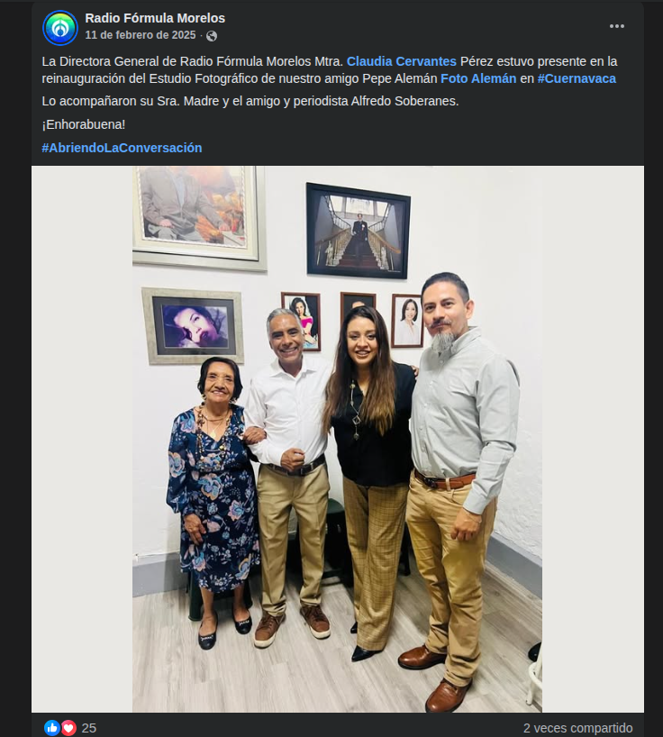
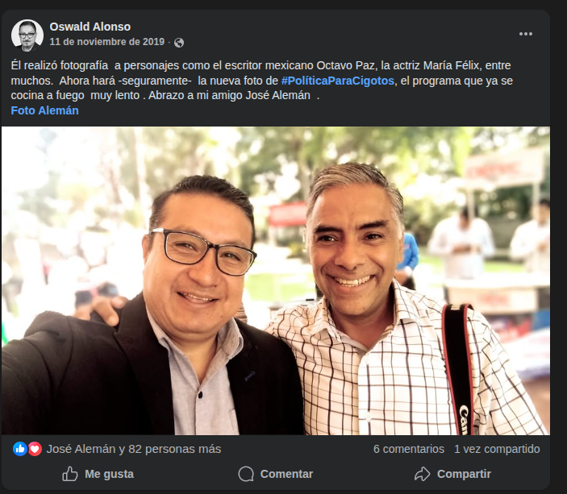
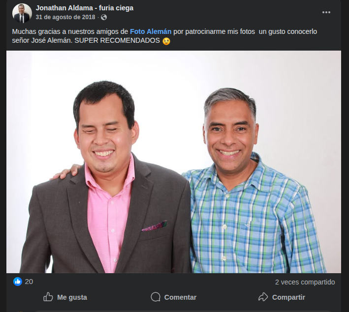
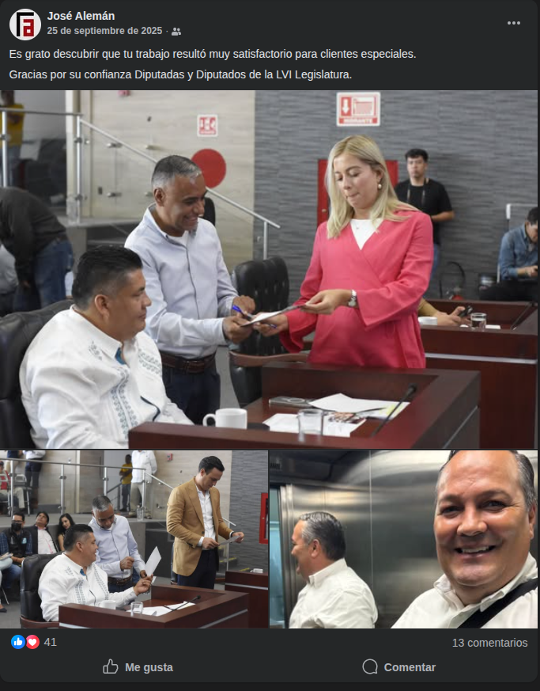

Descubre las experiencias de quienes han confiado en nosotros para capturar momentos extraordinarios.
La Voz de la Experiencia
Opinión de nuestros Clientes
"Pepe Alemán no es un fotógrafo, es un artista."
Jorge Arizmendi GarcíaRector de la UNIVAC (2025)
"El profesionalismo y la visión única de Foto Alemán lograron captar la esencia de mi labor. Es fotografía con verdadera trascendencia."
Graco Ramírez GarridoGobernador de Morelos (2012-2018)
"Una calidad impecable que transmite formalidad y confianza. Trabajar con Pepe Alemán es garantía de un resultado extraordinario."
Marco Adame CastilloGobernador de Morelos (2006-2012)
"Pepe Alemán entiende perfectamente cómo capturar la conexión con la gente. Sus retratos reflejan cercanía y autenticidad."
Juan Ángel FloresPresidente Municipal de Jojutla (2022)
"Un talento innegable. Las fotografías de Pepe capturan el momento exacto con una creatividad y sensibilidad excepcionales."
Jorge Cazarez CamposPintor (2020)
"Su habilidad para encontrar el mejor ángulo y la iluminación perfecta es insuperable. Me entregaron un trabajo digno de admirar."
Tania ValentinaDiputada (2024)
"El estudio Alemán es sinónimo de historia y prestigio. Cada retrato refleja un nivel de detalle que pocos logran conseguir."
Alberto Sánchez OrtegaPresidente Municipal de Xochitepec (2019)
"Excelente experiencia en el estudio. Saben cómo dirigirte para lograr la expresión perfecta con gran calidez humana."
Sergio Libera ChevereiaPresidente Municipal de Totolapan (2021)
"Altamente recomendables. Una sesión amena, rápida y con resultados formales de primera calidad."
Isaac Pimentel MejíaDiputado (2023)
"No solo compras fotografías, compras imagen pública. Con sus fotos hemos podido llegar a más clientes e incrementar el poder de nuestra marca. Si buscas un socio para tu negocio, Foto Alemán es la mejor opción en Cuernavaca."
Hazel ChávezEmpresario · Facebook Review
"Excelente fotografía, un gran trabajo 100% recomendado."
Vic MoralesFacebook Review · 2022
"100% Recomendado, tienen la mejor atención y un excelente trabajo."
Yoss SánchezFacebook Review · 2022
"Excelente servicio y atención super recomendados, gracias Foto Alemán."
Miranda MirandaFacebook Review · 2021
"Me encanta la calidad y el profesionalismo con el que trabajan. Son excelentes en lo que hacen!"
Dana PaolaFacebook Review · 2020

"La Directora General de Radio Fórmula Morelos Mtra. Claudia Cervantes estuvo presente en la reinauguración del Estudio Fotográfico de nuestro amigo Pepe Alemán Foto Alemán en Cuernavaca. ¡Enhorabuena!"
Radio Fórmula MorelosClaudia Cervantes · FEBRERO 2025

"Él realizó fotografía a personajes como Octavio Paz y María Félix. Ahora realizará la nueva foto de Política Para Cigotos. Abrazo a mi amigo José Alemán."
Oswald AlonsoPeriodista · NOVIEMBRE 2019

"Muchas gracias a nuestros amigos de Foto Alemán por patrocinarme mis fotos. Un gusto conocerlo señor José Alemán. SUPER RECOMENDADOS."
Jonathan AldamaFuria Ciega · AGOSTO 2018

"Es grato descubrir que tu trabajo resultó muy satisfactorio para clientes especiales. Gracias por su confianza Diputadas y Diputados de la LVI Legislatura."